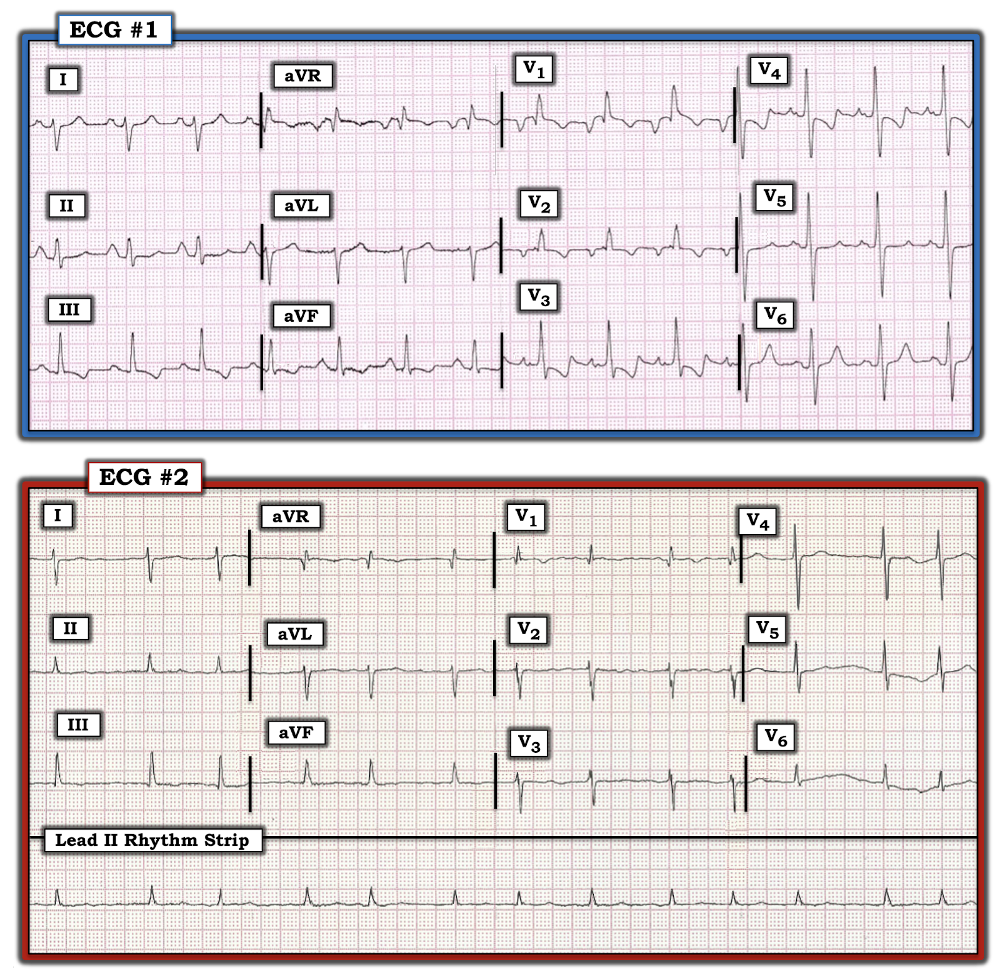
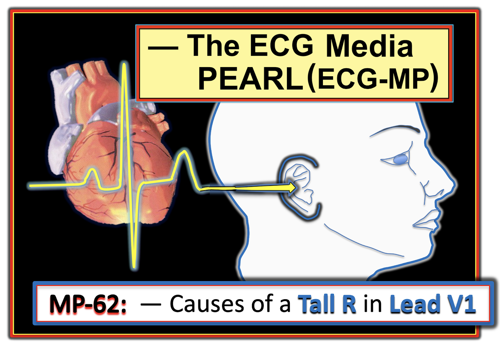
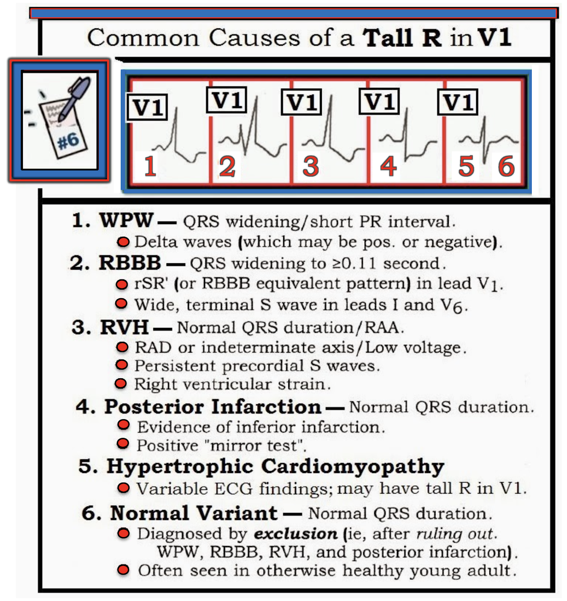
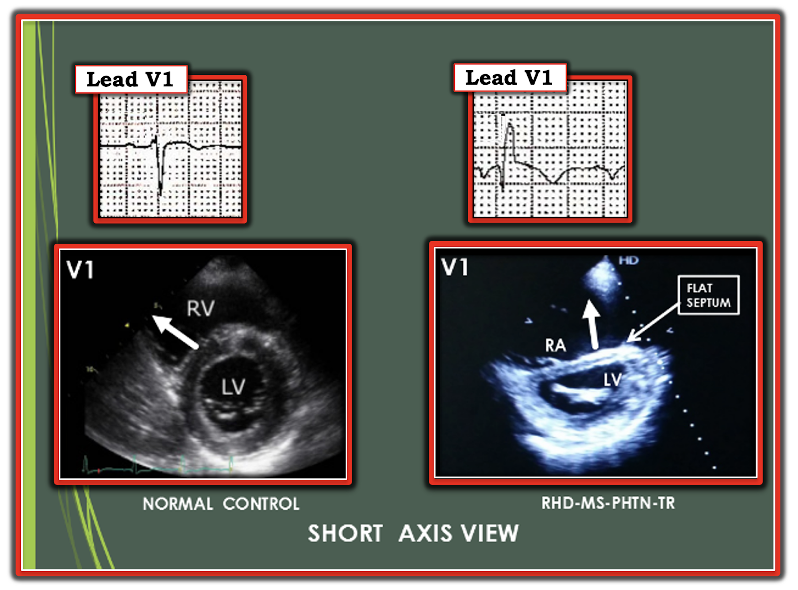

ECG Blog #248 (62) — Hình ảnh qR ở chuyển đạo V1
Cả 2 điện tâm đồ trong Hình-1 đều của các bệnh nhân đến từ Ấn Độ, có chung một quá trình bệnh lý. Hãy mô tả bệnh lý van tim mà họ có chung. Càng cụ thể càng tốt!
Điểm cộng:
- Hình dạng QRS ở chuyển đạo V1 gợi ý thêm thông tin bổ sung gì?


=======================================
LƯU Ý: Đến đây, một số bạn đọc có thể muốn nghe ECG Audio PEARL dài 9:00 phút trước khi đọc Suy nghĩ của tôi về điện tâm đồ trong Hình-1. Bạn có thể tham khảo bất cứ lúc nào phần Suy nghĩ của tôi về bản ghi này (nằm bên dưới ECG MP-62).
=======================================




Hôm nay, ECG Media PEARL #62 (9:00 phút Audio) — Ôn lại DANH SÁCH #6 của tôi: Các Nguyên nhân thường gặp gây Sóng R cao ở chuyển đạo V1.
- LƯU Ý: Tôi ôn lại các khái niệm được trình bày trong Audio Pearl hôm nay ở ECG Blog #81.
SUY NGHĨ CỦA TÔI về 2 điện tâm đồ trong Hình-1:
Như thường lệ — tôi ưu tiên dùng Cách tiếp cận hệ thống (mà tôi đã ôn lại trong ECG Blog #205):
Điện tâm đồ #1:
- Nhịp là nhịp xoang tần số 80-85/phút. Về các khoảng — khoảng PR và thời gian QRS đều ở giới hạn trên của bình thường (tức là lần lượt là 0,20 giây và 0,10 giây). QTc có vẻ kéo dài ở mức ranh giới. Có RAD (trục lệch phải — Right Axis Deviation) ở mức rõ rệt — vì phức bộ QRS ở chuyển đạo I chủ yếu âm.
- Về Lớn các buồng tim — có RAA = bất thường nhĩ phải — Right Atrial Abnormality (sóng P rất cao, nhọn ở chuyển đạo II) — LAA = bất thường nhĩ trái — Left Atrial Abnormality (sóng P âm rất sâu và rộng ở chuyển đạo V1) — và RVH = phì đại thất phải — Right Ventricular Hypertrophy (RAD rõ rệt, RAA, sóng R ưu thế ở chuyển đạo V1; thay đổi sóng ST-T phù hợp với "tăng gánh" thất phải (RV "strain") — và — sóng S sâu tồn tại dai dẳng ở các chuyển đạo trước tim cho tới tận chuyển đạo V6).
- Về Thay đổi Q-R-S-T: Như thường gặp (và không có gì bất thường) — có sóng Q ở chuyển đạo aVR. Nhưng một dấu hiệu quan trọng là sóng Q nhỏ-nhưng-có-thật ở chuyển đạo V1 (cũng như sóng q rất nhỏ ở chuyển đạo V2). Tôi đã ghi nhận sóng R ưu thế ở chuyển đạo V1 — cũng như dấu hiệu "tăng gánh" thất phải (RV "Strain") (ST-T chênh xuống ở cả chuyển đạo dưới lẫn chuyển đạo trước).
Điện tâm đồ #2:
- Nhịp là AFib (rung nhĩ — Atrial Fibrillation) với đáp ứng thất được kiểm soát (tức là nhịp không đều hoàn toàn và không có sóng P nào — với tần số thất trong khoảng ~65 đến 100/phút). Về các khoảng — không có khoảng PR (Không có sóng P); QRS hẹp và QTc bình thường.
- Có RAD (tức là phức bộ QRS chủ yếu âm ở chuyển đạo I) ở mức rõ rệt.
- Về Lớn các buồng tim — có RVH (RAD rõ rệt, sóng R ưu thế ở chuyển đạo V1; — và sóng S tồn tại dai dẳng cho tới tận chuyển đạo V6).
- Về Thay đổi Q-R-S-T: Có hình ảnh qR ở chuyển đạo V1. Tăng tiến sóng R trở lại bình thường sau sóng R ưu thế này ở chuyển đạo V1. Có sóng ST-T dẹt không đặc hiệu ở hầu như mọi chuyển đạo — nhưng rõ ràng không có thay đổi cấp tính nào.
==============================
ĐIỂM THEN CHỐT LÂM SÀNG (PEARLS) về điện tâm đồ #1 và #2:
Mặc dù có những khác biệt rõ ràng giữa các dấu hiệu điện tâm đồ trên 2 bản ghi trong Hình-1 — cả hai điện tâm đồ đều có chung một cơ chế sinh lý bệnh. Vì vậy — tôi sẽ tổng hợp các nhận xét của mình dưới dạng một loạt ĐIỂM THEN CHỐT lâm sàng về cách đọc 2 bản ghi này.
- Dấu hiệu điện tâm đồ chính trên cả hai bản ghi là RVH rõ rệt. Như đã nhấn mạnh nhiều lần trong ECG Blog này (Xem ECG Blog #234) — tôi thích nghĩ về RVH như một chẩn đoán "thám tử" — vì không có tiêu chuẩn điện tâm đồ đơn lẻ nào tự nó có thể chẩn đoán RVH một cách đáng tin cậy. Thay vào đó, cần một tổ hợp các dấu hiệu điện tâm đồ. Điều này được minh họa rất rõ ở điện tâm đồ #1 — trong đó các tiêu chuẩn ủng hộ chẩn đoán RVH trên điện tâm đồ gồm: i) RAD rõ rệt; ii) RAA; iii) sóng R ưu thế ở chuyển đạo V1; iv) "tăng gánh" thất phải ở cả chuyển đạo dưới lẫn chuyển đạo trước; và, v) sóng S sâu tồn tại dai dẳng cho tới tận chuyển đạo V6.
LƯU Ý: Người ta có thể bị cám dỗ diễn giải các dấu hiệu trên điện tâm đồ #1 là phù hợp với thiếu máu cục bộ và nhồi máu vùng trước — vì có sóng Q ở chuyển đạo V1 và V2 — hình dạng QRS ở chuyển đạo I, V1 và V6 phù hợp với IRBBB (blốc nhánh phải không hoàn toàn — Incomplete RBBB) — và — có ST-T chênh xuống ở các chuyển đạo dưới và chuyển đạo trước (chênh rõ rệt ở chuyển đạo V3 và V4).
- ĐIỂM THEN CHỐT (PEARL): "Manh mối" cho thấy có một cơ chế nào đó khác với bệnh tim thiếu máu cục bộ cấp đang tác động chính là kích thước khổng lồ của sóng P ở chuyển đạo II và V1!
- Như đã nhấn mạnh trong ECG Blog #75 — dấu hiệu sóng P lớn (tức là ≥2,5 mm) và nhọn, trông "ngồi lên chắc chẳng dễ chịu gì" ở một hoặc nhiều chuyển đạo dưới cho thấy RAA (và sóng P khổng lồ ở chuyển đạo II của điện tâm đồ #1 cao tới 3-4 mm! ).
- ĐIỂM MẤU CHỐT: Trong y học chỉ có 1 bệnh lý gây lớn nhĩ phải mà không đồng thời gây RVH. Bệnh lý đó là hẹp van ba lá, vốn hiếm gặp. Vì vậy, dấu hiệu RAA trên điện tâm đồ mà không phải do thể trạng gầy mảnh — thường cung cấp một manh mối gián tiếp quan trọng về sự hiện diện của RVH.
- Độ sâu và độ rộng của sóng P âm ở chuyển đạo V1 gần như sâu nhất mà bạn từng gặp! Dù là do lớn nhĩ trái thực sự — hay do áp lực nhĩ trái tăng rất mạnh — hay do một nhĩ phải khổng lồ "đổ sụp sang", tạo nên thành phần âm khổng lồ này của sóng P ở chuyển đạo V1 — điều cần nhấn mạnh là nhiều khả năng đang có một cơ chế nào đó khác với bệnh tim thiếu máu cục bộ cấp đơn thuần tác động!
- ĐIỂM THEN CHỐT (PEARL): Một "manh mối" khác cho thấy có cơ chế khác với bệnh tim thiếu máu cục bộ cấp đang tác động là: mặc dù QRS không giãn rộng (tức là không có RBBB) — vẫn có Sóng R cao ở chuyển đạo V1 — mà theo Audio Pearl trong bài blog hôm nay (ở trên), điều này gợi ý một chẩn đoán phân biệt, trong đó RVH là nguyên nhân cần được cân nhắc hàng đầu.
LƯU Ý: Việc chúng ta được biết rằng 2 bệnh nhân trong ca hôm nay cùng có một cơ chế sinh lý bệnh chung — và — cả hai bệnh nhân đều đến từ Ấn Độ cung cấp 2 manh mối quan trọng về cơ chế sinh lý bệnh chung mà hai bệnh nhân này cùng có:
- Mặc dù các dấu hiệu bất thường trên điện tâm đồ #2 ít hơn và kém nổi bật hơn — chúng lại còn gợi ý nhiều hơn về cơ chế sinh lý bệnh chung trong ca hôm nay so với điện tâm đồ #1. Một lần nữa, điện tâm đồ #2 cho phép chẩn đoán RVH rõ rệt vì có: i) RAD rõ rệt (QRS chủ yếu âm ở chuyển đạo I); và, ii) phức bộ QRS hẹp với sóng R ưu thế nhỏ-nhưng-vẫn-rõ ở chuyển đạo V1. Như đã nhấn mạnh trong ECG Blog #234 — khi đã thấy sóng R ưu thế ở chuyển đạo V1 ở người lớn, thì mức độ RVH đã là rõ rệt. Điều này càng đúng khi mức độ RAD cực đoan như gợi ý bởi phức bộ QRS chủ yếu âm ở chuyển đạo I của điện tâm đồ #2.
- Dấu hiệu quan trọng thứ 3 trên điện tâm đồ #2 là sóng lệch âm ban đầu nhỏ-nhưng-có-thật (sóng q) của phức bộ QRS ở chuyển đạo V1, tạo nên hình ảnh "qR". Sự hiện diện của hình ảnh qR ở chuyển đạo V1 ở bệnh nhân có RVH là dấu hiệu của tăng áp phổi nặng, kèm tăng nguy cơ tử vong (Waligóra và cs.: J Electrocardiol — 50(4): 476-483, 2017).
- Dấu hiệu quan trọng thứ 4 trên điện tâm đồ #2 là AFib (nhịp không đều hoàn toàn, không có sóng P) — vì dấu hiệu này hoàn tất một Tam chứng lâm sàng (AFib + RVH + qR ở V1) gợi ý mạnh mẽ RHD (bệnh tim do thấp — Rheumatic Heart Disease) kèm MS (hẹp van hai lá — Mitral Stenosis) nặng và hậu quả là tăng áp phổi — cho tới khi chứng minh được điều ngược lại! Lý do là khi hẹp van hai lá tiến triển (và diện tích van hai lá giảm dần) — kích thước nhĩ trái (và hậu quả là áp lực nhĩ trái) tăng dần — kéo theo tăng tương ứng áp lực động mạch phổi và tĩnh mạch phổi. Tình trạng mất bù lâm sàng có thể xảy ra nhanh chóng một khi xuất hiện AFib, vì điều này làm mất "cú hích" nhĩ (atrial kick) — vốn giúp tăng cường đáng kể sự đổ đầy thất trái mà bệnh nhân phụ thuộc vào (BẤM VÀO ĐÂY để xem một bài tổng quan xuất sắc trên Cardiology Advisor của O'Gara & Udell về chẩn đoán và đặc điểm lâm sàng của Hẹp van hai lá).
TẠI SAO Biết Cả hai bệnh nhân đến từ Ấn Độ lại hữu ích?
Vì tôi hành nghề lâm sàng ở Hoa Kỳ — số bệnh nhân RHD (bệnh tim do thấp — Rheumatic Heart Disease) mà tôi gặp trong sự nghiệp của mình là cực kỳ ít.
- Nhìn chung (có lẽ là nhờ việc sử dụng kháng sinh rộng rãi) — tỷ lệ mắc mới RHD ở các nước phát triển đã giảm mạnh trong thế kỷ qua. Hiện nay — tỷ lệ hiện mắc ước tính của RHD ở các nước phát triển là ~1/100.000.
- Ngược lại — tỷ lệ hiện mắc RHD (với các di chứng van tim có thể đáng kể) vẫn cao hơn nhiều ở những khu vực đông đúc của các nước kém phát triển hơn. Ví dụ — tỷ lệ hiện mắc ước tính của RHD ở Ấn Độ là ~100-150 ca/100.000 dân, tức là cao hơn 100 lần so với tỷ lệ hiện mắc RHD ở các nước phát triển (Medscape — Shah and Sharma — và Seckeler and Hoke).
- ĐIỀU CỐT LÕI của ca hôm nay: Dấu hiệu RVH rõ rệt trên điện tâm đồ kèm tăng áp phổi được giả định (tức là hình ảnh qR ở chuyển đạo V1) — đặc biệt khi đi kèm AFib — ở một bệnh nhân đến từ quốc gia có tỷ lệ hiện mắc RHD cao cần ngay lập tức gợi ý nguyên nhân là hẹp van hai lá nặng do RHD giai đoạn tiến triển.
2 Điểm cuối cùng về hình ảnh qR ở chuyển đạo V1:
- Về mặt kỹ thuật — người ta có thể bị cám dỗ gọi hình ảnh qR mà chúng ta thấy ở chuyển đạo V1 trên cả hai điện tâm đồ là phù hợp với IRBBB (blốc nhánh phải không hoàn toàn — Incomplete RBBB) — vì sóng S tận cùng có xuất hiện ở các chuyển đạo bên I và V6 trên cả hai bản ghi. Quan điểm của tôi (xét toàn bộ các dấu hiệu điện tâm đồ) — là quy hình ảnh qR này cho RVH nặng kèm tăng áp phổi, hơn là giả định có một rối loạn dẫn truyền. Dù vậy — đúng là RBBB hoàn toàn và/hoặc không hoàn toàn là tình trạng thường đi kèm RVH (và tôi hoàn toàn chấp nhận một kết quả đọc là RVH cộng IRBBB).
- Có một lý do sinh lý giải thích vì sao tăng áp phổi do hẹp van hai lá giai đoạn tiến triển thường tạo ra hình ảnh qR ở chuyển đạo V1 (Hình-2).


Để Kết luận: Cả hai bệnh nhân trong ca hôm nay có chung một cơ chế sinh lý bệnh:
- Cả hai bệnh nhân đều mắc RHD, với hậu quả là hẹp van hai lá nặng + tăng áp phổi + giãn thất phải kèm hở van ba lá nặng.
- Cơ chế sinh lý bệnh này có thể dự đoán dễ dàng dựa trên thực tế là: i) Cả hai bệnh nhân đều đến từ một quốc gia có tỷ lệ hiện mắc cao về RHD (tức là cả hai đều đến từ Ấn Độ); và, ii) Điện tâm đồ của mỗi bệnh nhân đều cho thấy RVH rõ rệt với hình ảnh qR ở chuyển đạo V1 — cũng như các dấu hiệu điện tâm đồ khác phù hợp với hẹp van hai lá nặng (tức là AFib, RAA, LAA).
==================================
Lời cảm ơn: Xin cảm ơn Dr. R Balasubramanian (đến từ Pondicherry, Ấn Độ) đã cho phép tôi sử dụng ca bệnh và các bản ghi này.
==================================
Các bài ECG Blog Liên quan tới ca hôm nay:
- ECG Blog #205 — Ôn lại Cách tiếp cận hệ thống của tôi khi đọc điện tâm đồ 12 chuyển đạo.
- ECG Blog #81 — Ôn lại Danh sách các Nguyên nhân thường gặp gây Sóng R cao ở chuyển đạo V1 — bao gồm các điểm MẤU CHỐT để nhận ra từng nguyên nhân trong 6 nguyên nhân của Danh sách.
- ECG Blog #234 — Phiên bản cập nhật của tôi về chẩn đoán RVH trên điện tâm đồ (Nghe Audio 7 phút về RVH trong bài này = ECG Media Pearl #50).
- ECG Blog #77 — Bài bàn luận ban đầu của tôi về các tiêu chuẩn điện tâm đồ của RVH.
- ECG Blog #75 — Ôn lại "Quan điểm của tôi" về các tiêu chuẩn điện tâm đồ của RAA & LAA.
- ECG Blog #156 — Ôn lại ca một người lớn bị Tứ chứng Fallot (kèm RVH rõ rệt + tăng áp phổi) chưa được phẫu thuật sửa chữa.
- ECG Blog #204 — Ôn lại "Quan điểm của tôi" về chẩn đoán các Blốc nhánh (Xem Video 13 phút trong bài này = ECG Media Pearl #22) trên điện tâm đồ.
- ECG Blog #193 — minh họa cách dùng Nghiệm pháp soi gương (Mirror Test) để hỗ trợ nhận ra nhồi máu cơ tim thành sau cấp. Bài blog này ôn lại những điều cơ bản để dự đoán "động mạch thủ phạm". LƯU Ý: Hình-5 trong Phần bổ sung của bài blog này minh họa những điểm thiết yếu để nhận diện nhồi máu cơ tim thành sau đơn độc.
- ECG Blog #80 — ôn lại cách dự đoán động mạch "thủ phạm" (và đưa ra một ca khác minh họa Nghiệm pháp soi gương để chẩn đoán nhồi máu cơ tim thành sau cấp).
- Bài đăng ngày 1 tháng 9 năm 2020 trên Dr. Smith's ECG Blog — Bình luận của tôi (ở cuối trang) ôn lại ca một phụ nữ trẻ bị Tăng áp phổi nguyên phát (bệnh này có thể chẩn đoán được từ điện tâm đồ! ).
- Bài đăng ngày 21 tháng 9 năm 2020 trên Dr. Smith's ECG Blog — Bình luận của tôi (ở cuối trang) nhấn mạnh công dụng của Nghiệm pháp soi gương trong chẩn đoán nhồi máu cơ tim thành sau cấp.
- Bài đăng ngày 16 tháng 2 năm 2019 trên Dr. Smith's ECG Blog — Bình luận của tôi (ở cuối trang) nhấn mạnh công dụng của Nghiệm pháp soi gương trong chẩn đoán nhồi máu cơ tim thành sau cấp.